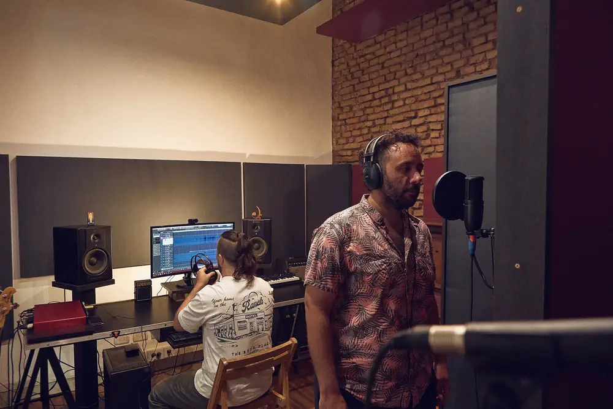
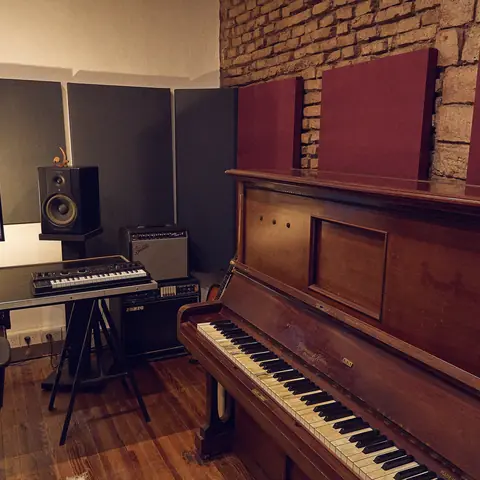
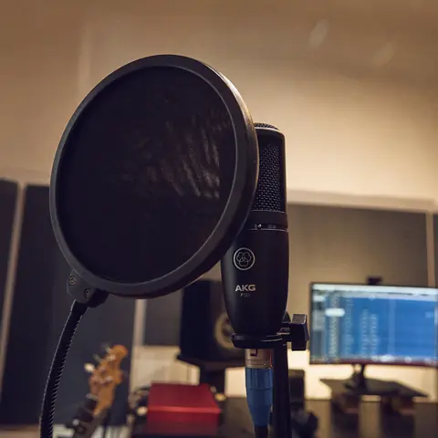
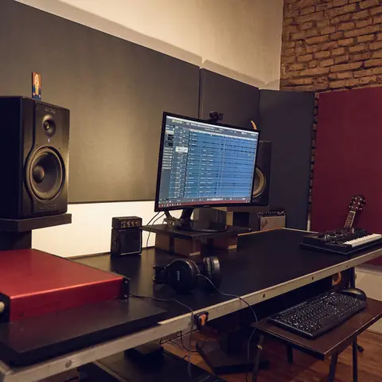
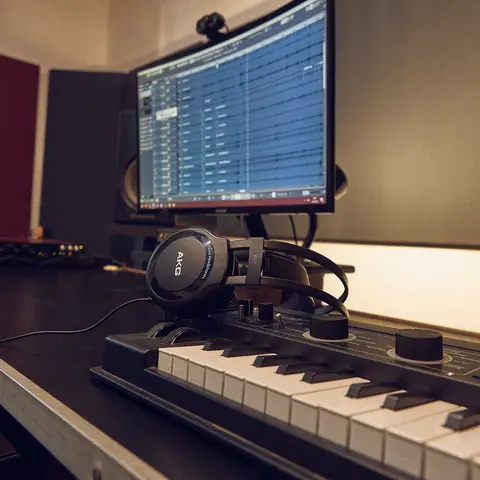

Grabación
Una sala grande y tratada, con piano, teclados, sintes, guitarras, bajo, batería y percusión a mano. Grabamos voces, bandas en vivo o por partes, con asistencia técnica toda la sesión.
Grabaron acá: Ezequiel Bahillo, Motel Montpellier, Guara, Los Palmos, Drusila Piovera.




En la salaPiano vertical · Focusrite Scarlett 18i20 · Monitores M-Audio BX8 · Cubase · Guitarras, bajo, batería, congas y bongó
Consultar por grabación